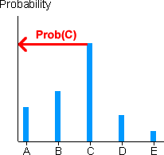
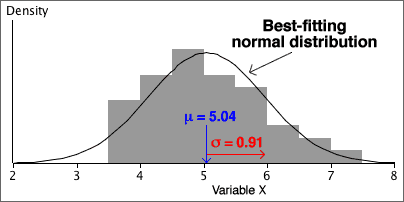

If you don't want to print now,
Discrete distributions
A discrete distribution describes the randomness of a situation in which a discrete numerical measurement is made. This discrete measurement is usually a whole number (count) and is called a discrete random variable.
Each possible value is associated with a probability and, since it is impossible to simultaneously record two different values (i.e. the values are mutually exclusive), the probabilities must sum to 1.
Car sales in 500 days
| Number of cars sold, X | 0 | 1 | 2 | 3 | 4 | 5 | 6 |
| Number of days | 25 | 125 | 150 | 100 | 50 | 25 | 25 |
Based on these records, we can obtain empirical probabilities — the relative frequencies for the possible counts:
| x | 0 | 1 | 2 | 3 | 4 | 5 | 6 |
| P(X = x) | 0.05 | 0.25 | 0.30 | 0.20 | 0.10 | 0.05 | 0.05 |
What is the probability that fewer than 3 cars are sold in a day?
P(X < 3) = P(X = 0) + P(X = 1) + P(X = 2) = 0.05 + 0.25 + 0.30 = 0.60
Describing categorical and discrete populations
Categorical and discrete samples can be described graphically with bar charts of the proportions for the distinct values. Since probabilities are defined to be population proportions, the underlying population can also be described by a bar chart.

Bar charts and the law of large numbers
The law of large numbers states that sample proportions approach the underlying probabilities as the sample size increases. This means that a sample bar chart will be close in shape to the unknown population bar chart if the sample size is big enough.
Expected value and mean
The mean of a numerical data set describes a 'typical' value. The expected value of a distribution has a similar interpretation and is also called the distribution's mean.
The expected value of a variable X is defined as a type of 'weighted average' of its possible values, with each value 'weighted' by the probability of it being obtained. The following formula gives a formal definition.
If the distribution is based on empirical probabilities from a discrete data set, the expected value of X is the same as the mean of this data set.
Car sales in 500 days
| Number of cars sold, X | 0 | 1 | 2 | 3 | 4 | 5 | 6 |
| P(X = x) | 0.05 | 0.25 | 0.30 | 0.20 | 0.10 | 0.05 | 0.05 |
The expected number of cars sold in a day is:
E[X] = 0 × P(0) + 1 × P(1) + 2 × P(2) + ... + 6
× P(6)
= 0 × 0.05 + 1 × 0.25 + 2 × 0.3 + 3 × 0.2 + 4 × 0.1 + 5 × 0.05 + 6
× 0.05
= 2.4 cars
Since these are empirical probabilities, this is the mean number of cars sold in the 500 days.
Variance and standard deviation
The centre of a discrete distribution and its spread are important. The variance of a discrete random variable is defined as:

This is a difficult calculation that you will not be required to make, so you do not need to learn the formula.
Properties of a sample proportion
A sample proportion from a random sample of size n has a distribution that ...
Count and proportion of successes
Although the sample proportion in a category, p , is a good summary statistic, the raw count of sample values in the category, x = np, contains equivalent information and is often easier to use. They have distributions with the same shape (other than the scaling constant n).

General notation
In a categorical population, we choose one category of interest and call it success; all other categories are collectively called failures. The population proportion of successes is denoted by π.
When a random sample of n values is selected, we denote the number of successes by x and the proportion of successes by p = x/n.
Distribution of a sample proportion
The number of successes, x , has a 'standard' discrete distribution called a binomial distribution which has two parameters, n and π.
In practical applications, n is a known constant, but π may be unknown. The sample proportion, p , has a distribution with the same shape, but is scaled by n .

Evaluating binomial probabilities
They may be obtained using ...
A range of counts
Finding the probability that the number of successes is within an interval involves adding the binomial probabilities for all integer values in the interval.
Think carefully about the wording of the interval — does it include the values at the end? Adding or subtracting 1/2 to the endpoints of the interval makes it clearer. (This is also particularly useful when using the normal approximations that are described in the following pages.)
| In words... | In terms of X | Using 1/2 |
|---|---|---|
| More than 5 | X > 5 | X > 5.5 |
| Greater than or equal to 5 | X ≥ 5 | X > 4.5 |
| No more than 5 | X ≤ 5 | X < 5.5 |
| At least 5 | X ≥ 5 | X > 4.5 |
| Fewer than 5 | X < 5 | X < 4.5 |
| 5 or fewer | X ≤ 5 | X < 5.5 |
The following example illustrates the use of 1/2 in this way.

Formulae
For binomial distributions, we can avoid tabulating the probabilities for the individual counts and finding the mean and standard deviation from these. Instead, we can use the following compact formulae for a binomial distribution's mean and standard deviation:
E[X] = µ = nπ
sd(X) = σ = √nπ(1 - π)
Assumptions underlying the binomial distribution
The binomial distribution is applicable to a wide range of applications provided...
Introduction
For categorical and discrete numerical variables, it is reasonable to talk about the probabilities of individual values, such as the probability of a success or of X = 0 breakdowns. However for continuous numerical variables, it no longer makes sense to talk about the probabilities for individual values.
For example, the probability that an apple will weight exactly 60 gm (and not 59.999 gm or 60.001 gm or ...) is zero. Instead we need to talk about the probabilities that continuous variables are within ranges, such as P(60 < weight < 70).
For a continuous probability distribution, probabilities are found as the area under a curve called a “probability density function”.
Histograms and probability density functions
The situation is a little more complicated for continuous numerical populations and samples. A standard histogram could be used to describe the population in the same way that it might be used for a sample:

However with an infinite population, we can narrow the histogram classes beyond what would be reasonable for a finite sample. Indeed, class widths can be reduced indefinitely, resulting in a smooth histogram called a probability density function. This is often abbreviated to a pdf.

Probability density functions are still essentially histograms and share all properties of histograms.
Probabilities from a histogram
In the histogram of any finite sample or population, the area above any class is the proportion of values in the class.

Probabilities from a probability density function
Since a probability density function (pdf) is a type of histogram, it satisfies the same property.
The probability that a sampled value is within two values, P(a < X < b), equals the area under the pdf.
This is the key to interpreting pdfs.

Shape of a probability density function
A probability density function is usually a fairly smooth curve, though a single sample histogram provides limited information about its likely shape.

Normal distributions
One flexible group of continuous probability density functions is the family of normal distributions. Normal distributions:
Changing the parameters µ and σ changes where the distribution is centred and its spread, but its shape remains otherwise the same.
The parameters are often estimated from a sample. Details will be given later, but the resulting normal pdf will be close in shape to a histogram of the sample data.

The sample data rarely gives enough information for us to be sure that the underlying population is normal, but a normal model is often used unless there is obvious non-normality in the data.
Even if the sample data are obviously skew, a normal distribution may be a reasonable model for a nonlinear transformation of the values (e.g. a log transformation).
Distribution of summary statistics
A more important reason for the importance of the normal distribution in statistics is that...
Many summary statistics have normal distributions (at least approximately).
The Central Limit Theorem shows that the mean of a random sample has a distribution that is close to normal when the sample size is moderate or large, irrespective of the shape of the distribution of the individual values. The following are also approximately normal when the sample size is moderate or large...
Effect of normal parameters on distribution
Distributions from the normal family have different locations and spreads, but other aspects of their shape are the same. Indeed, if the scales on the horizontal and vertical axes are suitably chosen, ...

A common diagram for all normal distributions
All normal distributions have basically the same shape.
This should allow you to sketch a normal distribution, given any values of µ and σ.

Some probabilities for normal distributions

A more precise version of the middle probability is
70-95-100 rule of thumb and the normal distribution
These probabilities are the basis of the 70-95-100 rule of thumb for 'bell-shaped' data sets.
Do the data come from a normal distribution?
A histogram may indicate that a sample is unlikely to come from a normal distribution, but a normal probability plot can indicate more subtle departures from a normal distribution.
If the data set is from a normal distribution, the data should be spaced out in a similar way to the normal quantiles, so the crosses in the normal probability plot should lie close to a straight line.

How much curvature is needed to suggest non-normality?
This is a difficult question to answer and we will not address it here.
Standard deviations from the mean
Any x-value can be expressed as a number of standard deviations from the mean — its z-score.

or equivalently,
x = μ + z × σ
Probabilities and z-scores
Any probability (area) relating to a normally distributed random variable, X, can be expressed in terms of z-scores:

Note in particular that:
Distribution of z-scores
Calculating a z-score from a value, x, is called standardising it.
| standardised value, |
|---|
If X has a normal distribution, then Z has a standard normal distribution with mean µ = 0 and standard deviation σ = 1.
Probabilities for the standard normal distribution
After translating a probability about X into one about a z-score, it is easier to evaluate it.

Areas under the standard normal curve can be evaluated in Excel and most statistical programs. Statistical tables can also be used (see later).
Evaluating other probabilities
Other probabilities about normal distributions can be found using the following properties:
Probability of higher value

Probability of value between two others

In both cases, the conversion can be done either before or after translating the required probability from x-values to z-scores.
Standard normal probabilities without a computer
Probabilities about z-scores can be found without a computer. Most introductory statistics textbooks contain printed tables with left-tail probabilities for the standard normal distribution.

These tables can be used after the required probability has been translated into a problem relating to the standard normal distribution.
Finding an x-value from a probability
Finding quantiles
To find the x-value for which there is probability p of a normal distribution being lower,
The first step of this process can be done with Excel (or other statistical software) or statistical tables can be used. For example, the diagram below shows how to find the z-score such that there is probability 0.9 of being less.

Translating from a z-score to the corresponding x-value is done with the formula,
x = μ + z σ
Mean and standard deviation of x and p
The mean and standard deviation are given below for the proportion of successes p , and number of successes, x = np

The fact that both x and p are approximately normally distributed in large samples is justified below.
Proportions and means
If we assign a code of '1' to the successes and '0' to the failures in the random sample, then the resulting values are called an indicator variable. Its mean is identical to the proportion of successes.

Since the proportion of successes in a sample is a kind of mean, its distribution is close to a normal distribution if the sample size is large enough.

Use of the normal approximation to the binomial distribution
To avoid adding large numbers of binomial probabilities, the normal approximation can be used to find the probability that a binomial variable is within a certain range when the sample size, n , is large.
A common rule-of-thumb for when this kind of normal approximation can be used is:
nπ > 5 and n(1-π) > 5
An example is given below:

Note the translation of the range of values into one involving 1/2. It is called a continuity correction in this context.